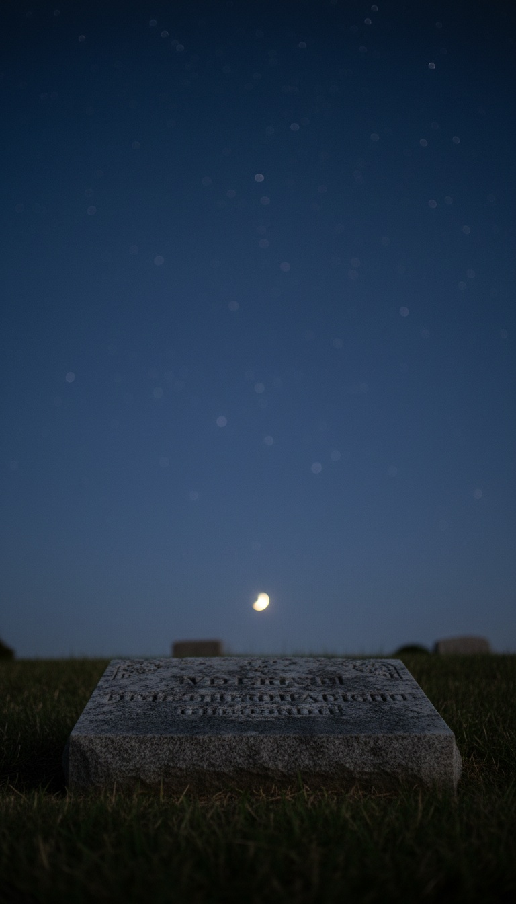

The man who built NASA's Moon rocket went into the ground under a verse about the firmament, the solid dome of Genesis.
Wernher von Braun is buried at Ivy Hill Cemetery in Alexandria, Virginia. His flat headstone carries his name, his years, 1912 to 1977, and one reference: Psalm 19:1. Open a King James Bible to that verse and it reads like a confession. “The heavens declare the glory of God; and the firmament sheweth his handywork.” The architect of the Space Age could have chosen any line in any language for his last word to the world. He chose the dome.

The Rocket Man Who Built the Road to the Moon
Von Braun was born on March 23, 1912, in Wirsitz, Prussia. By his early thirties he was running the V-2 program at Peenemünde on the Baltic coast, and in 1945 the United States brought him across the Atlantic under Operation Paperclip. Fort Bliss, Texas. Then Redstone Arsenal in Huntsville, Alabama. Then the top of the American space program.
On July 1, 1960, he became the founding director of NASA's Marshall Space Flight Center in Huntsville. President Eisenhower flew in to dedicate the center that September. From that desk von Braun built the machine that defined the century: the Saturn V, 363 feet tall, the most powerful rocket ever flown when it carried Apollo 11 off Pad 39A on July 16, 1969.
You can stand under his work today in three places. The Saturn V lies on its side in Rocket Park at Johnson Space Center in Houston. Another hangs over the floor of the Apollo/Saturn V Center at Kennedy Space Center in Florida. A third is displayed at the U.S. Space & Rocket Center in Huntsville, a few miles from his old office. Every one of them is a monument to the man who opened the sky.
The Verse He Took Into the Ground
The word on his grave is firmament. In Hebrew it is raqia, and it comes from the root raqa, which means to beat out, to hammer flat, the way a smith hammers metal into a sheet. Exodus 39:3 uses that same root for gold beaten into thin plates for the priest's garments. Job 37:18 asks if man can spread out the sky with God, “strong, and as a molten looking glass.” Genesis 1:6 names the thing outright: “Let there be a firmament in the midst of the waters, and let it divide the waters from the waters.”
That is the image Psalm 19 opens with. A hammered vault. Waters above it. The heavens laid out like a craftsman's work. Keep reading the psalm and verse four goes further: “In them hath he set a tabernacle for the sun.” A tent. A covering. A structure with the sun moving inside it.
Von Braun knew exactly what he was choosing. He became a committed Christian after attending a small church in El Paso while stationed at Fort Bliss in the late 1940s, and for the rest of his life he spoke and wrote about the Creator behind the universe he was trying to reach. A man that deliberate does not pick his epitaph by accident. He spent his career pointing rockets at the heavens, and when the time came to speak from the grave, he pointed at the firmament.
NASA and the Hebrew Word for Deceive
Now say the agency's name out loud. NASA. In biblical Hebrew there is a real word, nasha, Strong's number H5377. It means to deceive. To beguile. To lead astray.
It is the word at the center of the oldest deception in Scripture. Genesis 3:13, Eve standing before God in the garden: “The serpent beguiled me, and I did eat.” Beguiled is nasha. The same word returns in 2 Kings 18:29 when the Assyrian envoy shouts at the walls of Jerusalem, “Let not Hezekiah deceive you.” It returns again in Jeremiah 29:8: “Let not your prophets and your diviners, that be in the midst of you, deceive you.” The serpent, the invader, the false prophet. Three deceivers, one word.
NASA will tell you its name stands for the National Aeronautics and Space Administration, signed into law by Eisenhower on July 29, 1958. Look at how that agency names everything else. Mercury, messenger of the Roman gods. Gemini, the twins written in the stars. Apollo, the sun god himself. Artemis, his sister of the Moon. This is an institution that has chosen ancient names with intent for sixty years. An agency that names its rockets after gods understands that names carry weight.
The agency that sold the world the stars carries the Hebrew word for the serpent's lie, and the man who built its greatest rocket took the firmament to his grave.
Christmas Eve 1968: Genesis From Lunar Orbit
Apollo 8 lifted off on a Saturn V on December 21, 1968. Frank Borman, Jim Lovell and Bill Anders became the first human beings to leave Earth orbit and circle the Moon. On December 24, on their ninth orbit, they went live to the planet below.
They did not describe the craters. They read Genesis. Anders took verses one through four. Lovell took five through eight. Borman closed with nine and ten. That means the firmament verses, “And God made the firmament, and divided the waters which were under the firmament from the waters which were above the firmament,” were spoken from lunar orbit by a man riding von Braun's rocket.
The audience was the largest in human history at that moment. Roughly a billion people, out of about three and a half billion alive, heard the dome described from the far side of the sky. A quarter of humanity. And the passage chosen for that moment was the one passage in the Bible that describes the heavens as a built, solid, water-holding structure.
The broadcast was fought in court. Activist Madalyn Murray O'Hair sued NASA administrator Thomas Paine over the reading, and the case was thrown out. The reading stood. The firmament was read to the world from orbit, and when someone tried to stop it, the system closed ranks behind it.
They Keep Quoting the Dome
Stack the receipts. December 24, 1968: Apollo 8 reads the firmament verses from lunar orbit. July 20, 1969: Buzz Aldrin takes communion inside the lunar module Eagle at Tranquility Base before he ever sets foot outside. June 1977: the father of the Saturn V is laid to rest in Alexandria under Psalm 19:1.
Then add the men who came back changed. Apollo 15 astronaut James Irwin walked on the Moon in 1971, came home, founded a ministry called the High Flight Foundation, and spent the 1980s climbing Mount Ararat in Turkey looking for Noah's Ark. He went to the Moon and returned searching for the flood, the event Genesis says came when “the windows of heaven were opened.” Windows. In a structure.
These were the most technical minds of the twentieth century. Engineers, test pilots, physicists. They had the best view of the heavens anyone has ever had. And over and over, at the most watched moments of their lives, they reached past the language of orbital mechanics and grabbed the oldest description of the sky on record. The hammered vault. The waters above. The tent for the sun.
Here is what stays with me. The program that taught the world the sky is endless was built by a man who chose a dome for his gravestone, flown by crews who read the dome aloud to a quarter of the planet, and named with a word the Bible reserves for the serpent's lie. Any one of those is a curiosity. All three, from the same men, in the same decade, is a pattern.
Next time you stand under that Saturn V in Houston, look up at the ceiling above it and remember the last thing its builder wanted carved over his body. The men who sold you the stars kept quoting the firmament. Tell me in the comments: who were they really talking to?
Before you go
7 books the Vatican doesn't want you reading. Free PDF — the texts they cut, with sources. Joined by 140+ Inner Circle members.
No spam. Unsubscribe anytime.
Go deeper
The Hidden Canon, Vol. I — Enoch. Jubilees. Thomas. Mary. Judas. 90 pages, 14 chapters, every receipt cited. The books your Bible quietly removed.
Read the Canon →Books that informed this investigation
As an Amazon Associate, Hidden Epoch earns from qualifying purchases. Cost to you: nothing.
Research safely
The VPN we use to research without being tracked. First 3 months free.
Get NordVPN →